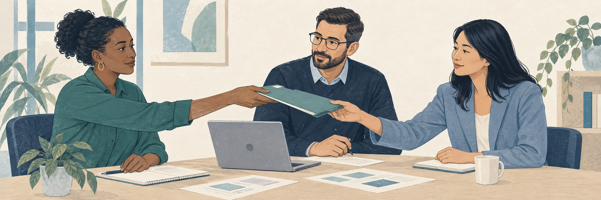

This sprint is about choosing a problem you can investigate through this course. You will begin with your own experience.
A problem is a gap between how something works now and how it could work, where the gap costs someone something real.
You are going to come up with a list of problems you might be interested in exploring. We call them candidate problems.
A problem frame is your written account of a problem. It says what is happening, who it costs and what it costs them, how it is handled today, and what you do not yet know.

Work moves between people. Illustration created with AI for this course.
The goal is to move from a wide list to one framed problem, following these steps over the course of two weeks.
Week 1
Week 2
Spread week 1 across several days. The brainstorm’s help asks you to watch your routine for a day or two if your list comes up short.
Brainstorm your list, Get underneath, Dojo Lab: own your progress, 0 points. Submit each activity to record completion. These activities carry 0 points, but Canvas requires a submission to complete the module.
Concept check: 5 points. Your instructor reviews completion.
First frames: 35 points. One submission, all your frames, written part by part.
Problem Frame: 50 points. One submission.
Reflection: 10 points.
Three activities ask you to work without AI: the brainstorm, the table underneath it, and First frames. The reason is narrow. AI has no access to what you have stopped noticing, what you keep putting off, or what you work around, and those are where problems hide. Once your own read is written down, AI can be your partner. The Dojo Lab uses it to test and widen your frames, and it will do that well only because you wrote them first.
Use rough, specific notes, and say so honestly when a search produces nothing. You are choosing something to investigate, not proving its cause. The frame has its own way of marking what you are unsure of; until then, a guess written as a guess is fine.
Keep everything you write, including items you set aside. The Reflection compares your first frames with your final one, and your set-aside list is where you go if your choice does not survive.
Use the Candidate Log, a document template you copy once and keep for the whole sprint. Make your copy of the Candidate Log. It runs the whole sprint. Part A holds your brainstorm, Part B your table, Part C your draft frames, one per candidate, and Part D your Problem Frame. Each activity names the part it fills. Paste that part, or a link to your Log, into the activity’s response box.
Begin with Brainstorm your list.